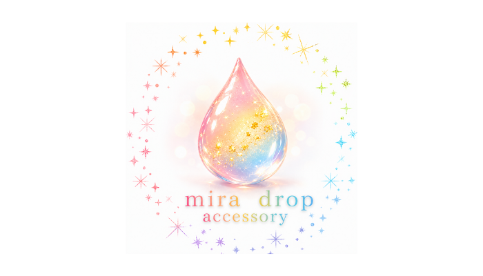
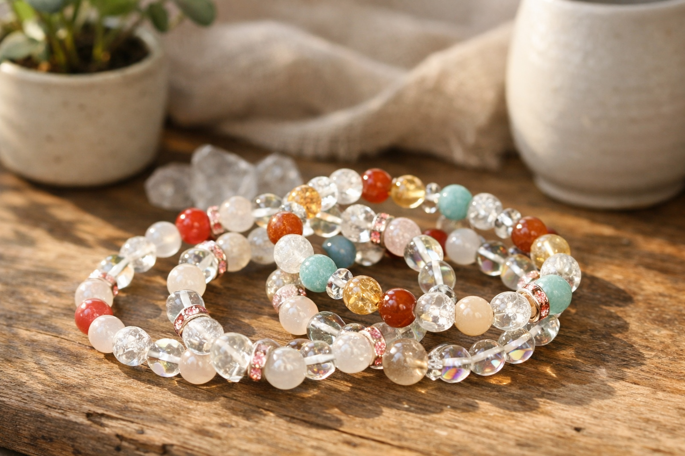
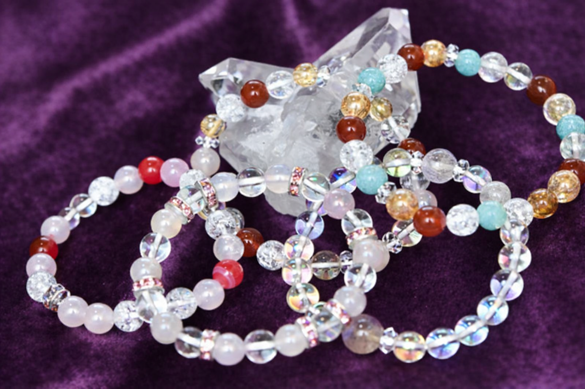
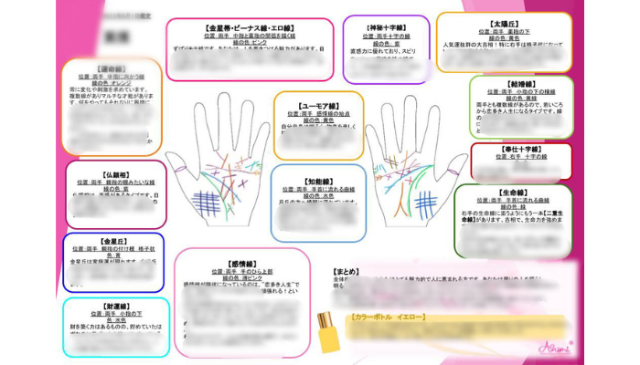

迷うのは、前に進みたいから。
うまく言葉にならない感覚。
それが何なのかを知ることが、
次の一歩になる。
無料占い
客観的な視点から、現在地を整理する
横浜みなとみらいを拠点に活動している、MIRAIです。
「どうすればいいんだろう？」「このままでいいのかな？」——そんな気持ち、日常の中でふと湧き上がることはありませんか？
頭の中だけでぐるぐると考えていると、何が本当の問題なのか、かえって見えなくなってしまうことがあります。
私自身は占い師ではありませんが、占いコンテンツの作成・イベント事業の運営、そしてお一人おひとりの悩みに向き合う電話相談をメインに承っています。
鑑定料を支払って専門的な占いを受けるだけでなく、もっと身近に、気軽に楽しんでいただけるコンテンツをお届けしたい。
そんな想いから、当サイトのコンテンツはすべて現役の占い師監修のもとで作成しています。
無料であっても本格的なロジックを組み込んでいるため、一般の方のセルフチェックはもちろん、現役の占い師の皆様が日々の鑑定で活用できる「補助ツール」としてのクオリティも目指しています。
占い師様向けのご活用・ご相談は、お問い合わせフォームよりお気軽にどうぞ。
コンテンツを試してみて、「もう少し深く話したい」「頭の中を整理したい」と感じたときは、ZoomまたはGoogle Meetを使ったオンライン電話相談も承っています。WEB相談のため、全国どこからでもご利用いただけます。一人で抱え込まず、まずはお気軽にご相談ください。
提携ブランドの紹介

mira drop
星の輝きのような唯一無二のアクセサリー。細部までこだわり抜かれた美しい世界観が、身につける人の個性をそっと引き立てます。

bless me
パワーストーンは私を幸せにする私へのギフト。上質な天然石だけを使用し、日常に心地よい調和をもたらすお守りのようなブレスレットを展開しています。

おつねストーン
未来が“読める”と、幸運が芽吹きだす。ハイクオリティな天然石の販売とともに、ロジカルかつ丁寧に未来をひも解く占い教室を主宰しています。

オリジナル手相鑑定書
逢純（あすみ）先生監修。手のひらに刻まれた線から、あなたの才能と歩む道筋を丁寧に読み解く、世界に一つだけのオリジナル鑑定書をお届けします。
オンラインヨーガクラス
Sia先生監修。呼吸とともに心と身体を整える、自宅で叶うヨーガ体験。日々の緊張をほどき、本来の自分へと還る穏やかな時間をご案内します。